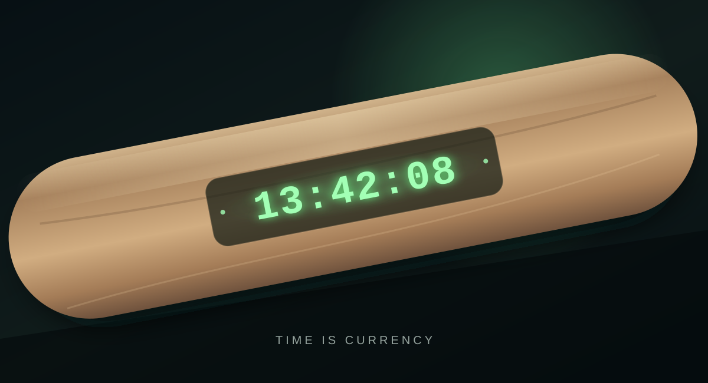

Spoiler uyarısı: Aşağıdaki inceleme filmin temel olaylarını ve finalini açıklar.
Zamana Karşı (In Time, 2011), senaryosunu yazan ve yöneten Andrew Niccol’ün bilim kurgu filmidir. Justin Timberlake’in canlandırdığı Will Salas, zamanın hem para hem de yaşam süresi olduğu bir düzende alt sınıfta yaşayan genç bir işçidir. İnsanlar 25 yaşında yaşlanmayı bırakır; o andan sonra kollarındaki sayaç geri saymaya başlar. Süreleri biterse ölürler. Kazandıkları, satın aldıkları ve başkalarına aktardıkları her şey saat ve dakika cinsinden ölçülür.
Film bu fikri bir kovalamaca öyküsüne dönüştürür. Will’in karşısına çıkan Henry Hamilton ona büyük miktarda zaman aktarır; ardından Will, annesini kaybetmesiyle bu düzenin bedelini kişisel olarak yaşar. Zenginlerin yaşadığı bölgelere uzanan yolculuğunda Sylvia Weis’le (Amanda Seyfried) karşılaşır. İkisi, yoksulların ömrünü kısaltırken varlıklıların yüzyıllar boyunca yaşamasını sağlayan sistemi hedef alır.
Resmî fragman
“Vakit nakittir” sözü gerçek olduğunda
Filmin en güçlü buluşu, gündelik bir deyimi dünyanın fiziksel yasasına çevirmesidir. Bizim dünyamızda para, yaşam süresini dolaylı biçimde etkiler: barınma, sağlık, güvenlik ve boş zaman kaynaklara bağlıdır. In Time bunu doğrudanlaştırır; bir kahvenin fiyatı, otobüs bileti ya da kira, karakterlerin ömründen eksilir. Sayaç, ekonomik baskıyı soyut bir istatistik olmaktan çıkarıp bedenin üzerinde görünen bir tehdide dönüştürür.
Bu anlatı, emeğin zaman üzerinden ölçülmesini hatırlatır. Karl Marx’ın ücretli emek çözümlemesinde işçi, emek gücünü belirli bir süre için satar; film bu alışverişi uç noktaya taşıyarak satılan şeyin doğrudan yaşamın kendisi olduğunu gösterir. Bu, filmi Marx’ın düşüncelerinin birebir uyarlaması yapmaz; sınıf ve emek üzerine okumaya el veren bir benzerliktir. Filmde zamanın başkasına aktarılabilmesi de eşitsizliğin yalnızca para miktarıyla değil, kimin geleceğe sahip olduğu ile ilgili olduğunu vurgular.

Şehirler arasındaki uçurum: sınıfın haritası
Film, sınıf farkını yalnızca karakterlerin sahip olduklarıyla değil, hareket edebildikleri alanla da kurar. Yoksullar kısa süreli kazançlar için çalışır ve her gün yeniden sayaçlarına zaman eklemek zorundadır. Zenginlerin yaşadığı bölgelere geçiş ise zaman bakımından pahalıdır; güvenlik görevlileri, ücretler ve kurallar bu sınırı korur. Böylece şehir haritası, ekonomik sınıfların birbirinden ne kadar ayrıldığını gösteren bir düzene dönüşür.
Will ve Sylvia’nın bankalardan zaman alıp dağıtması, Robin Hood anlatısının bilim kurguya uyarlanmış biçimidir. Kahramanlar zenginliğin birikmiş olduğu kasalara saldırır; ancak film, büyük miktarda zaman dolaşıma girdiğinde fiyatların, ücretlerin ve kurumların nasıl değişeceğini ayrıntılı biçimde araştırmaz. Bu yüzden sistem eleştirisi güçlü bir görsel öncüle dayanırken, çözüm önerisi daha çok bireysel isyan ve yeniden dağıtım düzeyinde kalır. Filmin basit görünen “zamanı geri vermek” hamlesi, toplumsal düzeni değiştirmek için kurumların ve gücün de değişmesi gerekip gerekmediği sorusunu açık bırakır.
Ölümsüzlük mü, ayrıcalıklı bir ölüm korkusu mu?
Filmde insanlar yaşlanmayı durdurabilir; ama bu, herkesin ölümsüz olduğu anlamına gelmez. Zamanı olmayan kişi dakikalar içinde, zenginliği olan kişi ise yüzyıllar sonra ölebilir. Ölümlülük ortadan kaldırılmamış, ekonomik erişime göre dağıtılmıştır. Bu yüzden In Time’ın asıl sorusu “İnsan sonsuza kadar yaşamalı mı?”dan çok, “Bir insanın ne kadar yaşayacağına kim karar veriyor?” olur.
Seneca, Yaşamın Kısalığı Üzerine adlı denemesinde insanların hayatı kısa bulmalarına karşın zamanlarını başkalarının amaçlarına harcayabildiğini tartışır. Niccol’ün dünyasında bu düşünce maddi bir biçim alır: karakterlerin zamanını yalnızca dikkat dağıtıcı işler değil, fiyatlar, borçlar ve ücret düzeni de tüketir. Yine de film, zamanı herkes için aynı değerde kabul etmek yerine, yoksullar için acil ve zenginler için birikime dönüşen bir kaynak olarak gösterir.
Geri sayım, gerilim ve anlatı
Kollardaki yeşil sayaç, filmin temel anlatı aracıdır. İzleyici karakterin ne kadar zamanı kaldığını sürekli görebildiği için sıradan bir yolculuk bile ölüm kalım meselesine dönüşür. Market kuyruğu, toplu taşıma veya bir pazarlık, aksiyon sahnesi kadar gerilimli olabilir. Film böylece zamanı yalnızca konu olarak değil, sahne temposunu belirleyen bir biçim unsuru olarak da kullanır.
Bu görsel kuralın bir bedeli vardır: karmaşık ekonomik ve politik ilişkiler, bazen sayaçtaki rakamlar ve kovalamaca sahneleriyle fazla basitleşir. Yine de film, soyut eşitsizliği izleyicinin hemen anlayabileceği bir imgeye çevirerek etkili olur. Bir karakterin kolundaki rakam değiştiğinde sistemin nasıl işlediğini uzun bir açıklama olmadan kavrarız.
Filmin felsefi mirası
Zamana Karşı kusursuz bir ekonomi modeli kurmaktan çok, “zaman kimin?” sorusunu akılda kalıcı hâle getirir. Film; ücretli emek, borç, servet birikimi ve ölüm korkusunu tek bir para biriminde toplar. Aynı zamanda tek başına kahramanlıkla eşitsizliğin sona erip ermeyeceğini sorgulamak için alan bırakır. Bu nedenle filmin en verimli felsefi okuması, yalnızca zamanın nasıl bir para olduğunu değil, bu parayı dağıtan kuralların kimlere hizmet ettiğini de sormaktır.
Distopik sinemanın sınıf ve iktidar eleştirisine ilgi duyuyorsanız distopya yazımıza; gerçeklik ve özgür irade tartışmaları için Matrix çözümlememize de göz atabilirsiniz.
Kaynaklar ve görsel notları
- Niccol, Andrew (yazar ve yönetmen). In Time (2011). Film ve oyuncu bilgileri için IMDb film kaydı.
- Marx, Karl. Capital, Volume I, 6. bölüm: “The Buying and Selling of Labour-Power.” Metin.
- Seneca. On the Shortness of Life. İngilizce çeviri.
- In Time resmî fragmanı: 20th Century Studios’un doğrulanmış YouTube kanalı.
- Andrew Niccol’ün In Time panelinde sahneye çıkış fotoğrafı: Chris Paduan; türetilmiş sürüm: RanZag / Wikimedia Commons, CC BY 2.0. Fotoğraf kaydı.
- Bilek sayacı illüstrasyonu: Valexirion için özgün olarak hazırlanmıştır; film karesi değildir.
Panel fotoğrafı CC BY 2.0 lisanslıdır; bilek sayacı ise bu yazı için hazırlanmış özgün bir illüstrasyondur. Telifli film kareleri ve poster, yayın izni doğrulanmadığı için kullanılmamıştır. Film çözümlemesi editoryal yorumdur.